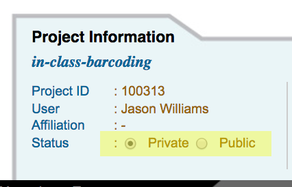

Accessing Saved Private and Public DNA Subway Projects¶
DNA Subway projects are automatically saved for registered users. By default, Subway projects are private upon creation and visible only to you. You may make project public, in which case users will have the ability to view those projects, but may not edit those projects.
Accessing Private Projects¶
-
Access the DNA Subway website at https://dnasubway.cyverse.org/
-
Upon login, you will see a listing of your private projects. Access the project by clicking the project title.
-
From any DNA Subway page, you may access private projects by clicking the 'My Projects' button on the navigation menu on the left side of the page.
Distinguishing Lines
All projects in DNA Subway are associated with the color of their respective DNA Subway lines, and with a project ID number.
You may see the comments and species associated with the project

Deleting a project
To delete a project, click the 'trash can' icon. Once deleted, all data related to that project will be lost and unrecoverable.
Accessing Public Projects¶
-
Access the DNA Subway website at https://dnasubway.cyverse.org/; login to Subway or enter as a guest user.
-
On the navigation menu on the left side of the screen, click 'Public Projects'
Sorting and Search
You can sort by project date or type, and you can search for a project by title, organism, or the name of the project owner. When searching, click the double arrow `` to search by your selected term.
Make a DNA Subway Project Private or Public¶
- Access the DNA Subway website at https://dnasubway.cyverse.org/; login to Subway.
- Access your selected project by clicking the project title.
- Under the 'Project Information' tab, toggle the project setting to 'Public' or 'Private' as desired. 
Fix or improve this documentation
- Search for an answer: CyVerse Learning Center
- Ask us for help: click the Intercom icon
 on the lower right-hand side of the page
on the lower right-hand side of the page - Report an issue or submit a change: Github Repo
- Send feedback: learning@CyVerse.org